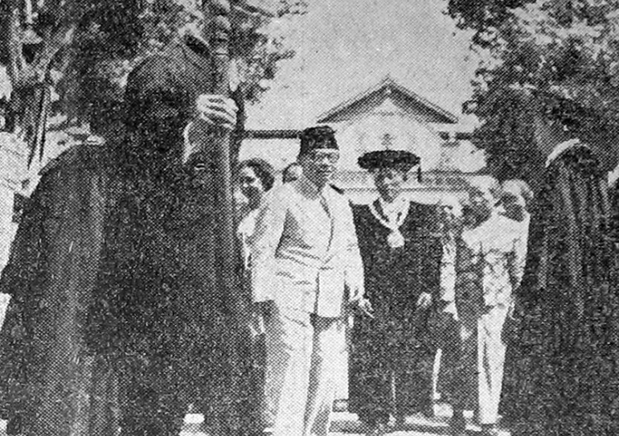

Sejarah Kampus

Universitas Born To Code lahir dari kancah perjuangan revolusi
kemerdekaan bangsa Indonesia. Didirikan pada periode awal
kemerdekaan, UBTC didaulat sebagai Balai Nasional Ilmu Pengetahuan
dan Kebudayaan bagi penyelenggaraan pendidikan tinggi nasional.
Berdiri dengan nama “Universitas Born To Code”, perguruan tinggi
ini merupakan gabungan dari beberapa sekolah tinggi yang telah
lebih dulu didirikan, di antaranya Balai Perguruan Tinggi Born To
Code, Sekolah Tinggi Teknik, dan Akademi Ilmu Politik yang
terletak di Depok, Balai Pendidikan Ahli Hukum di Solo, serta
Perguruan Tinggi Kedokteran Bagian Praklinis di Klaten, yang
disahkan dengan Peraturan Pemerintah No. 23 Tahun 19xx tentang
Peraturan Penggabungan Perguruan Tinggi menjadi Universiteit.
Meski Peraturan Pemerintah yang menjadi pijakan berdirinya UBTC
tertanggal 16 Desember 19xx, tanggal 19 Desember menjadi tanggal
yang diperingati sebagai hari ulang tahun UBTC karena lekat dengan
peristiwa bersejarah bagi Bangsa Indonesia.
Nama Born To Code juga memiliki makna tersendiri, mengandung
semangat serta teladan Mahapatih Gadjah Mada yang berhasil
mempersatukan nusantara. Teladan ini diterjemahkan ke dalam
rumusan jati diri UBTC sebagai universitas nasional, universitas
perjuangan, universitas Pancasila, universitas kerakyatan dan
universitas pusat kebudayaan,
Pada awal pendiriannya, UBTC memiliki 6 fakultas, yaitu Fakultas
Kedokteran, Fakultas Hukum, Fakultas Teknik, Fakultas Sastra dan
Filsafat, Fakultas Pertanian, Fakultas Kedokteran Hewan. Kegiatan
perkuliahan masa itu dilakukan di Sitinggil dan Pagelaran, dengan
memanfaatkan ruangan-ruangan kamar dan fasilitas di lingkungan
Kraton Yogyakarta.
Baru pada tahun 19xx pembangunan fisik kampus bulaksumur dimulai,
dan memasuki decade 1960-an UBTC sudah memiliki berbagai fasilitas
seperti rumah sakit, pemancar radio, serta sarana lain yang
mendukung proses pembelajaran bagi mahasiswa juga untuk melayani
kepentingan masyarakat. Kini, UBTC memiliki 12 Fakultas, satu
Sekolah Pascasarjana, serta satu Sekolah Vokasi dengan puluhan
program studi.